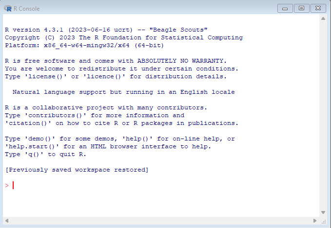
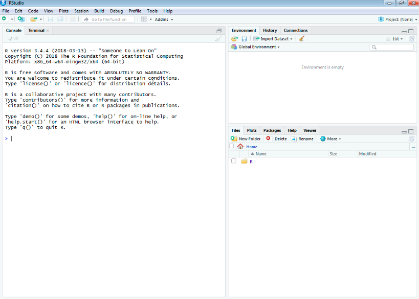
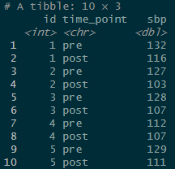

#installing packages is done using the install.packages() function
install.packages("tidyverse")
#once you have downloaded the package, you need to load it using the library() function
library(tidyverse)R & tidyverse basics
R & RStudio
I will use R and RStudio to create different plots in next week’s Lunch & Learn. I will provide all code and output in a separate document before the Lunch & Learn in case you would like to follow along or try the code on your own. You can copy and paste the code into RStudio.
Click here for a guide to installing R & RStudio.
Why use R at all?
R was specifically developed as a statistical environment for data analysis.
It has a large support community that creates and maintains packages that allow you to perform almost any analysis you could possibly imagine.
It is free and runs on all major operating systems.
It allows you to save and share your work easily, which facilitates reproducibility and open science practices.
It integrates easily with services such as GitHub that make collaboration and version control easy
The R Console
You will use the console to perform data wrangling, analysis, and visualization. You can start an R console by simply starting R on your computer.Your console will look like this:

You can do everything you need in this console. However, using an integrated development environment (IDE) like RStudio has many benefits.
RStudio
RStudio lets you easily create scripts of your code, which you can save for future use, edit as required, and share with collaborators or the world. It also offers many features that make coding (and publishing) easier: auto-completing and highlighting errors in your code, allowing you to create webpages (such as this one), manuscripts, and entire books with integrated (and if you want interactive) code, and much more.
RStudio will open with three panels, showing the console on the left:

You can use the console to perform operations or open a new script to start typing and saving your code. By default, the new script will be added as a fourth panel in the top left and push the console to the bottom left.

When you run code from the script, your code and its output will automatically be shown in the console. By default, plots and rendered tables will be shown in the bottom right panel, which also has tabs for files, packages, etc.
***Note that your plot will be rendered to conform to the size of your panel. So depending on how you have the size set, the plot might look funny initially. You can change the size of the panel at any time and the plot will adjust. You can set a specific size and resolution when you save or export the plot.
Customizing the appearance of RStudio
There are endless options to customize the appearance of RStudio, including switching to “dark” mode and changing the layout of the panels. You can make adjustments via Tools -> Global Options.
I like to use a dark theme with the script in the top left, console in the top right, and the plot panel in the bottom right:

R basics
Packages
While you can do most operations in “base R”, the strength of R really comes into play when you start installing packages that were created specifically to perform certain operations such as advanced statistical procedures, plotting, etc.
In RStudio, you can install packages using point-and-click via Tools -> Install Packages. You can also use code to do this, which is the more common way of installing and loading packages.
The below code chunk shows you how to do this. Note, the lines starting with a # are “commented out”, meaning they will not be executed by the program. You can use this to include comments in your code for reproducibility and to remember what you were doing in a script when you come back to it after a while.
Note that the install.packages() function requires quotation marks, while the library() function does not.
The tidyverse and ggplot2
There are many different packages to analyze data and create plots in R. In fact, you can do all of this in base R. However, ggplot2, which is part of the tidyverse collection of packages, is one of the most versatile and powerful graphing packages. It allows you to create and customize anything from basic scatter plots to spacial data displayed on maps. When you install and load the tidyverse package (as shown above), ggplot2 is automatically installed and loaded.
Tidy data
For ggplot2 your data should be in a “tidy” format (which is essentially “long” format), where each row represents one observation and columns represent the variables available for these observations. The below code creates a mock data set of 5 participants with systolic blood pressure measurements (sbp) before (pre) and after (post) a treatment.
#setting "seed" to make sure everyone's simulated data are the same
set.seed(111)
#create wide data set
df <- tibble(id = seq(1,5), #5 participants
sbp_pre = round(rnorm(5, 130, 8), 0), #SBP before
sbp_post = round(rnorm(5, 115, 8),0)) #SBP after
df #this will show the table in your consoleThis should create the following (wide) data set:
Note how the observation “time point” (pre vs. post) is encoded in the column header, rather than being listed as one row per observation.
Here is how you would reshape it to long (“tidy”) format using the tidyverse function pivot_longer().
#reshape to long data set
df_long <- df %>%
pivot_longer(-id,
names_sep = "_",
names_to = c(".value", "time_point"))
df_longThis should give you the following output:

I will provide a link to a document with code and examples of graphs before the Lunch & Learn next week. You can follow along making the graphs by just copying and pasting the code in to RStudio.
Please let me know if you have any questions before, during, or after the Lunch & Learn.